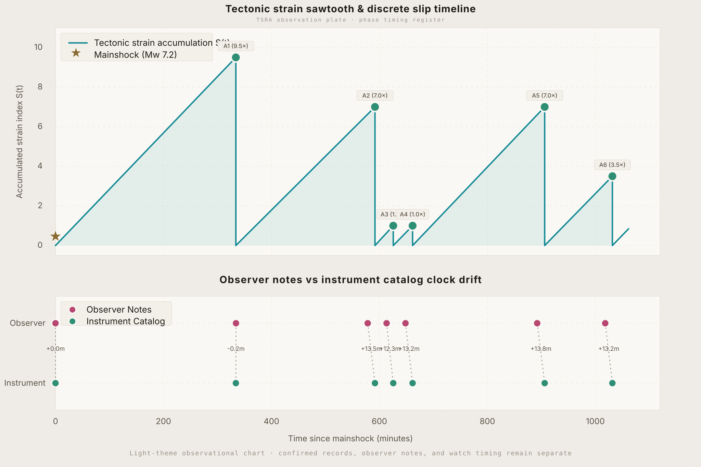

Seismic Pulse

| Label | Timestamp | Interval | Status |
|---|---|---|---|
| MS | Jun 08 · 07:37 AM | — | ✓ Confirmed |
| A1 | Jun 08 · 01:12 PM | 334.3 min | ✓ Confirmed |
| A2 | Jun 08 · 05:16 PM | 244.0 min | ✓ Confirmed |
| A3 | Jun 08 · 05:51 PM | 35.0 min | ✓ Confirmed |
| A4 | Jun 08 · 06:26 PM | 35.0 min | ✓ Confirmed |
| A5 | Jun 08 · 10:30 PM | 244.0 min | ✓ Confirmed |
| A6 | Jun 10 · 12:36 AM | 126.0 min | ✓ Confirmed |
| A7 | Jun 10 · 02:12 AM | 96.0 min −28 min early | ✓ Confirmed |
| A8 | Jun 10 · 02:55 AM | 43.0 min +8 min | ✓ Confirmed |
| A9 | Jun 10 · 03:26 AM | 31.0 min −4 min early | ✓ Confirmed |
| A10 | Jun 10 · 03:36 AM | 10.0 min sub-pulse | ✓ Confirmed |
| Source | Report Time | Linked Watch | Timing | Outcome | Status |
|---|---|---|---|---|---|
| FELTLocal felt · low certainty · pending official check | Jun 10 · by ~09:55 AM | 09:13 AM extended-phase watch | Earlier / uncertain | Significant felt activity | Pending PHIVOLCS |
| OBSLocal outcome · no-shake note · not official | Jun 10 · 02:03 PM | 7.0× long-phase watch | Watch center elapsed | No local outcome observed | Elapsed |
| OBSLocal outcome · no-shake note · not official | Jun 10 · 03:32 PM | 9.5× extended-phase watch | Watch center elapsed | No local outcome observed | Elapsed |
| FELTLocal felt-only · low certainty · pattern context | Jun 10 · ~05:14 PM | 05:37 PM phase-sensitive watch | Before the watch time; ~23 min before anchor | Brief local shake felt | Felt-only |
| FELTLocal felt-only · low certainty · pattern context | Jun 10 · ~07:36 PM | 07:41 PM 7.0× long-phase watch | Before the watch time; ~5 min before anchor | Subtle local movement felt for ~1 min | Felt-only |
| OBSLocal outcome · no-shake note · not official | Jun 10 · 09:10 PM | 9.5× extended-phase watch | Nothing happened during the watch | No local shake observed | Elapsed |
| FELTLocal felt-only · low certainty · anchor candidate | Jun 10 · ~11:47 PM | 3.5× phase-sensitive watch | After the watch time; ~32 min after anchor | Subtle local movement noticed for brief | Felt-only |
| Phase | Window | Watch Time | Remaining | Observation Class | Status | Record |
|---|---|---|---|---|---|---|
| 1.0× | 35.6 min | Jun 11 · 12:22 AM | — | First post-anchor observation watchModel window · generated · not warning | — | |
| 3.5× | 124.4 min | Jun 11 · 01:51 AM | — | Phase-sensitive observation watchModel window · generated · not warning | — | |
| 7.0× | 248.9 min | Jun 11 · 03:55 AM | — | Long-phase observation watchModel window · generated · not warning | — | |
| 9.5× | 337.7 min | Jun 11 · 05:24 AM | — | Extended-phase observation watchModel window · generated · not warning | — |

Read the dashboard as a timing diary. It shows when confirmed events happened, how far apart they were, and where the current observation windows sit relative to the fitted pulse rhythm.
The main rhythm is the repeated rise-and-reset pattern: quiet build-up, then an observed release or watch outcome.
The labeled phase bands organize time. They do not certify that shaking will happen or how strong it will be.
Confirmed events, felt reports, and model watch windows stay separate so the chart remains useful without overstating certainty.
Rising lines mark quiet stress build-up. Drops mark observed release and reset.
Higher peaks mean longer phase intervals, not guaranteed stronger shaking. Amplitude is logged separately.
1×, 3.5×, 7×, and 9.5× organize timing around a fitted 35.5-minute pulse.
Human notes and official records stay separate, then comparable. Agreement strengthens the timing read.
TSRA is an observational timing tool built from field notes, confirmed event timestamps, and a fitted phase model. Its purpose is to organize rhythm: what was confirmed, what was felt, and which watch windows are worth observing next.
Official or instrument-backed seismic records stay in the event log so the baseline remains clean.
Human reports are logged separately when timing matters but confirmation is still pending.
The model marks timing bands for observation only; it does not certify an event or estimate magnitude.
Machine transcript generated from the local M4A narration source. Active words follow the video playback time; review proper nouns against source context when needed.
Machine transcript generated from the local M4A narration source. Active words follow the video playback time; review proper nouns against source context when needed.
On the morning of June 8, 2026, a magnitude 7.8 earthquake struck the Cotabato Trench boundary off the southwestern coast of Mindanao. What followed was not a random scatter of aftershocks. It was a structured sequence — one that kept returning to the same timing intervals, hours apart and across two days, in a way that only a locked fault under constant pressure can produce.
The Cotabato Trench is one of the fastest-loading subduction boundaries in the Pacific region. The Celebes Sea floor dives eastward beneath Mindanao at roughly 100 millimetres every year — that is 10 centimetres of compression every 12 months, relentlessly applied to a megathrust interface that spans hundreds of kilometres.
The fault does not absorb this pressure gradually and slip away quietly. Instead, high-friction patches called asperities lock the interface in place. Elastic strain accumulates in the surrounding rock until the locking force is overcome. Then the patch snaps — a stick-slip release — and the cycle begins again from zero.
The 1918 Celebes Sea earthquake (Ms 8.3) and the 1976 Moro Gulf earthquake (Mw 8.1) both originated from this same boundary. The 2026 sequence is not an anomaly in the historical record; it is the record continuing.
After the mainshock, the aftershocks arrived at intervals that proved non-random. A3 and A4 — two consecutive events on the same afternoon — each arrived exactly 35.0 minutes after the previous event. Within 37 seconds of the fitted 35.55-minute baseline. Twice in a row.
The larger gaps held the same structure at longer range: A1 arrived 334 minutes after the mainshock (9.5× = 337.7 min, delta −3.4 min). A2 and A5 both arrived 244 minutes after their predecessors (7.0× = 248.9 min, delta −4.9 min). A6 arrived 126 minutes later (3.5× = 124.4 min, delta +1.6 min).
The system appears to discharge at discrete multiples of the base interval: 1×, 3.5×, 7×, and 9.5×. These are not values derived from a published equation. They are what the Cotabato data produced, and the fit to them is what TSRA measures.
TSRA takes the fitted 35.55-minute baseline and opens four phase windows after each confirmed event. When the next event arrives, it either lands inside a window or it does not. The model re-anchors after every confirmed hit and keeps the next set of windows open for observation.
This is not a seismic forecast in the scientific sense. There is no magnitude estimate, no rupture probability, no claim about whether a window will produce anything locally felt. The model is a timing instrument for watching whether the structural rhythm continues to hold.
During an active sequence, knowing when to look more carefully is itself useful — especially for people living close to the source zone who have no access to real-time institutional monitoring.
A7 is the honest anomaly: it arrived 28 minutes before the predicted 3.5× window. The ratchet slipped early on that cycle. The model re-anchored, and by A9 the sequence was back within 5 minutes of the 1× slot. The rhythm re-asserted itself after the perturbation — which is itself a meaningful observation about the fault’s mechanical consistency.
A10, a 10-minute sub-pulse after A9, falls outside the standard phase model entirely. Short-lag releases closely coupled to the preceding event are common in complex aftershock sequences and are not what TSRA is designed to watch for.
The model is built on 11 confirmed events across a roughly 44-hour window. That is enough to fit a baseline and open watch windows, but not enough to treat the multiplier pattern as a permanent feature of this fault’s behaviour. Two forward-looking windows on the afternoon of June 10 elapsed without a locally felt outcome, and the 09:10 PM extended-phase watch also elapsed with no local shake observed. Felt observations at ~05:14 PM and ~07:36 PM remain useful timing notes, but they are not confirmed seismic events.
TSRA does not know how much strain remains stored. It does not know whether the next window will produce surface motion strong enough to feel. It does not substitute for PHIVOLCS advisories, civil defence instructions, or professional seismological assessment. What it does is keep the timing record visible during an active sequence, in plain language, for anyone watching the ground.